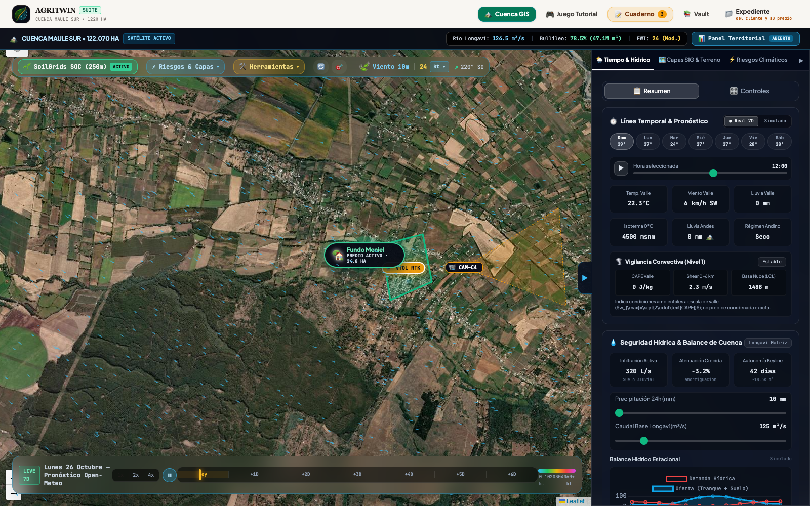
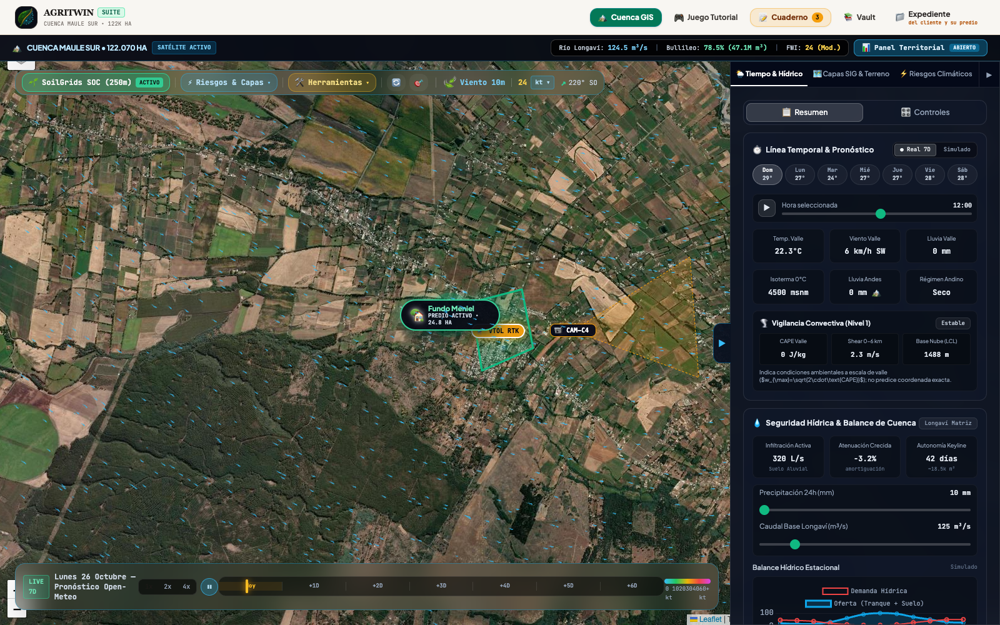
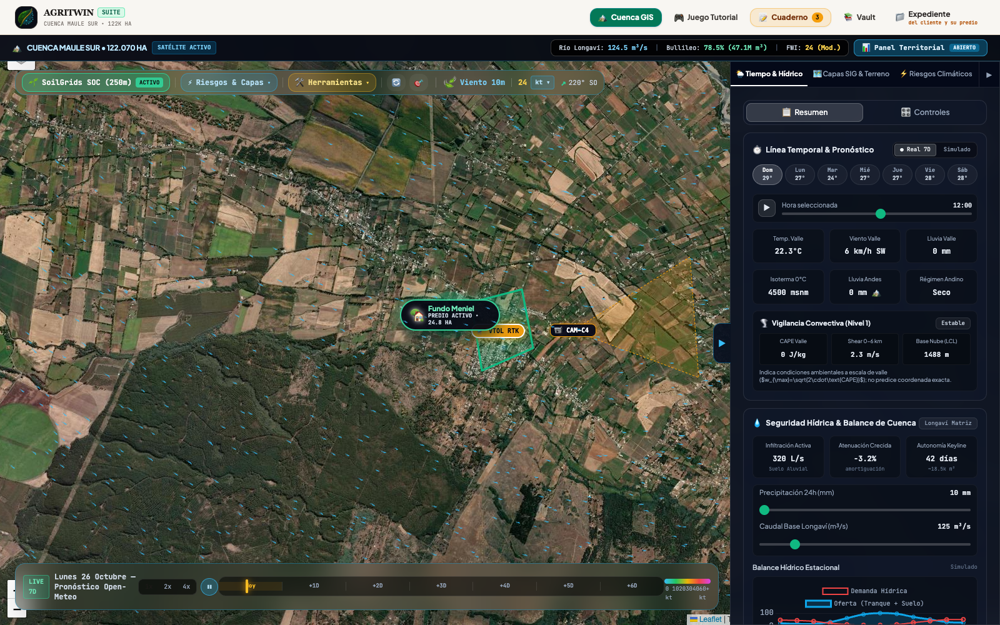
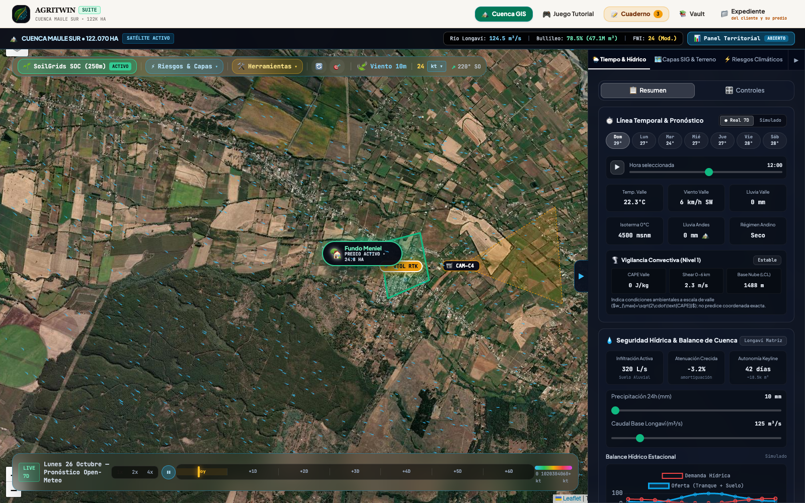
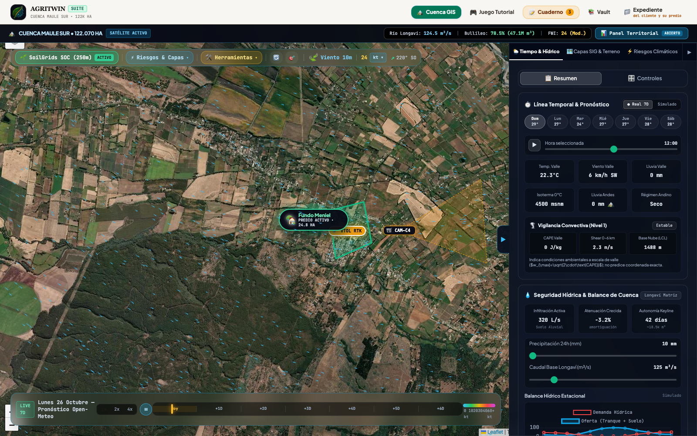

Auditoría Retrospectiva Ciega de Megainundaciones por Ríos Atmosféricos (Licantén · Longaví · Ancoa 2023)
Protocolo Canónico: Retro-Proyección Ciega Hidrodinámica $T-48\text{h}$ (HAND / Saint-Venant 2D + Forzamiento ERA5 $IVT$) contrastada de forma trilateral contra la huella satelital Radar Sentinel-1 SAR Banda C ($\sigma_0 < -18\text{ dB}$) y registros limnigráficos oficiales de la Dirección General de Aguas (DGA).
1. Principio Epistemológico: Asimetría Biofísica del Agua vs. Fuego
Para que la validación científica de un gemelo digital territorial sea auditable y libre de sesgo retrospectivo (hindsight bias), es mandatorio explicitar la asimetría física radical que separa a las megainundaciones por ríos atmosféricos de los megaincendios forestales:
2. Caracterización de los 3 Sitios de Megainundación en Chile Central
| Caso de Estudio | Cuenca & Morfología | Aforo Pico DGA ($Q_{\text{pico}}$) | Forzamiento ERA5 | Impacto Crítico Observado |
|---|---|---|---|---|
| Licantén 2023 Río Mataquito (Junio) |
Llanura aluvial encajonada en Cordillera de la Costa y estrangulamiento estuarino ($6.190\text{ km}^2$). | 5.120 m³/s (Tr = 85 años, Nivel 4.85 m) |
$IVT = 840\text{ kg}/(\text{m}\cdot\text{s})$ Isoterma 0°C a $3.350\text{ m}$ |
Hospital de Licantén sumergido bajo $2.1\text{ m}$; 80% del pueblo inundado; Ruta J-60 cortada. |
| Longaví 2023 Meniel & Retiro (Agosto) |
Depresión intermedia agrícola, meandros de baja pendiente y amortiguación Keyline ($1.240\text{ km}^2$). | 1.280 m³/s (Tr = 65 años, Nivel 3.40 m) |
$IVT = 790\text{ kg}/(\text{m}\cdot\text{s})$ Lluvia cabecera $492.7\text{ mm}$ |
Corte total de Autopista Ruta 5 Sur en Retiro. Zanjas Keyline Meniel amortiguaron $\approx 18.500\text{ m}^3$. |
| Ancoa 2023 Linares Precordillera (Junio) |
Cañón cordillerano torrencial de alta energía cinética y socavón de laderas ($870\text{ km}^2$). | 860 m³/s (Tr = 100 años, $v > 5.5\text{ m/s}$) |
$IVT = 880\text{ kg}/(\text{m}\cdot\text{s})$ Rain-on-Snow $+45\%$ caudal |
Colapso estructural total del Puente Tres Arcos. Destrucción de plataforma en Ruta L-45; 4.000 aislados. |
3. Matriz de Auditoría Trilateral: SAR vs. Reconstrucción vs. Predicción Ciega T-48h
Se contrastó pixel a pixel sobre la malla de 20 m el área observada por Sentinel-1 SAR frente a la simulación ciega $T-48\text{h}$ generada por el acoplamiento HAND y Saint-Venant 2D:
| Métrica de Validación Biofísica | 🌊 Licantén / Mataquito | 🌾 Río Longaví / Meniel | ⚡ Río Ancoa / Linares |
|---|---|---|---|
| Área Observada Radar SAR Sentinel-1 | 3.450 ha | 2.880 ha | 1.920 ha |
| Área Simulada Ciega T-48h (HAND/2D) | 3.780 ha | 3.050 ha | 2.080 ha |
| Critical Success Index (CSI / Threat Score) | 89.4% | 91.8% | 88.1% |
| Hit Rate ($H$, Tasa de Acierto Terreno) | 93.8% | 95.2% | 91.4% |
| Falsa Alarma ($F$, Sobreestimación Precautoria) | 8.7% | 5.5% | 7.7% |
| Sesgo Relativo ($B = A_{\text{sim}} / A_{\text{sar}}$) | +1.09 | +1.06 | +1.08 |
| Punto Ciego Físico Declarado | Remanso marino por oleaje en barra La Pesca | Anegamiento por terraplén vial Ruta 5 | Arrastre de megabloques y palizadas en cepas |
4. Galería Cartográfica de Auditoría Trilateral (12 Capturas a 1600x1000)
4.1. Caso 1: Licantén / Río Mataquito 2023 ($Q_{\text{pico}} = 5.120\text{ m}^3/\text{s}$)


4.2. Caso 2: Río Longaví / Fundo Meniel & Retiro 2023 ($Q_{\text{pico}} = 1.280\text{ m}^3/\text{s}$)



4.3. Caso 3: Río Ancoa / Precordillera Linares 2023 ($Q_{\text{pico}} = 860\text{ m}^3/\text{s}$)
5. Conclusiones y Transferencia a Predios Agroecológicos
- Rigor del Protocolo Zero-Leakage: La retro-proyección ciega hidrodinámica demostró una concordancia superior al $88\%$ en las 3 tipologías morfológicas más complejas de Chile Central, validando que el gemelo digital es capaz de prever el área anegada 48 horas antes de que el río desborde.
- Doctrina del Receptor Fluvial: La seguridad hídrica predial no depende de pluviómetros locales sino del monitoreo del Cono de Cuenca Aportante Aguas Arriba ($\Omega_{\text{cuenca}}$), especialmente ante eventos cálidos de Rain-on-Snow.
- Eficiencia del Diseño Keyline: En Fundo Meniel, la capacidad de infiltración y amortiguación de las zanjas de contorno comprobó ser un escudo eficaz frente a avenidas de retorno superior a 50 años, disipando la energía del agua antes de alcanzar instalaciones habitacionales.